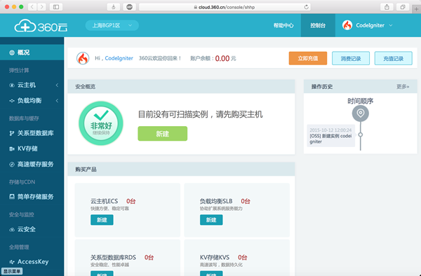
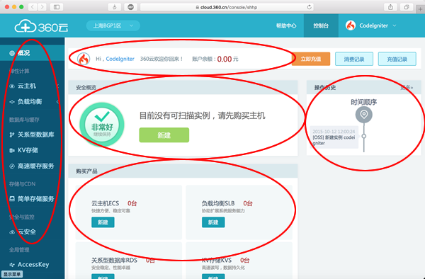
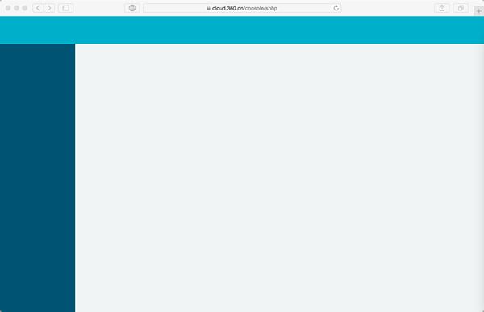
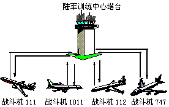
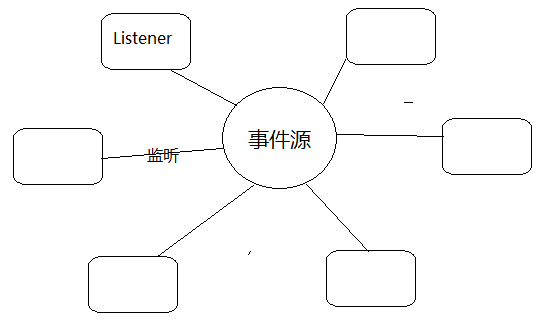

Transformers
让你像搭积木一样开发应用的 Javascript 框架

谈谈前端组件化
- 什么是组件？
-
Web Components
- 通过 Shadow DOM 封装组件的内部结构
- 通过 Custom Element 对外提供组件的标签
- 通过 Template Element 定义组件的 HTML 模板
- 通过 HTML imports 控制组件的加载
- 模块 === 组件？
组件化实践
一个复杂网站或单页应用的实际例子


组件容器
组件容器就是包含所有组件的一个页面。

Transformers 框架简介
Transformers 框架是一个以 Javascript 为控制层，鼓励前端渲染的，专注组件化这一件事情的前端框架。
框架诞生于 2009 年
解耦，解耦，解耦，重要的事情说三遍！
Transformers 框架特点
- 完全组件化，一个应用的所有部分均由组件组成
- 以 Custom Element 的方式使用组件
- 组件加载器负责加载组件的所有资源
- 组件有 3 种通信方式
- 组件支持多级继承，框架自动管理组件依赖关系
- 组件支持异步加载
- 组件支持 Namespace
- 支持组件级路由（Router）
以 Custom Element 的方式使用组件
<!DOCTYPE html>
<html>
<body>
<aside>
<tf:common-navigation></tf:common-navigation>
</aside>
<div>
<tf:home-info></tf:home-info>
<tf:home-history></tf:home-history>
<tf:home-message></tf:home-message>
</div>
</body>
</html>
组件和组件的加载
// 定义名为 MyInboxMessage 的组件
TF.define('MyInboxMessage', {
DomReady: function() {
},
// Action 是组件对外的接口
testAction: function(args) {
},
// 组件私有方法，外部无法访问
renderOk: function() {
}
});
组件名: MyInboxMessage (映射关系是可配置的)
JS: http://domain.com/my/inbox/message.js
HTML: http://domain.com/my/inbox/message.html
DATA: http://domain.com/my/inbox/message.php
↑ 上面的组件名和 URL 的映射关系是可以自定义的 ↑
组件的通信方式
1. 中介者模式

组件的通信方式
2. 观察者模式

组件的通信方式
3. 投递消息方式
- 组件拥有独立的消息处理函数
- 消息分为系统消息和用户消息
- 一个消息由消息名和消息参数组成
- 通过组件管理器投递给目标组件
组件多级继承
TF.define('EarthAnimal', {
});
TF.define('EarthCat', {
Mentor: {
name: 'EarthAnimal'
}
});
TF.define('EarthWhiteCat', {
Mentor: {
name: 'EarthCat'
}
});
组件异步加载
在使用组件的时候，如果指明异步加载，那么在组件没有被操作的时候，不会加载组件的任何资源。
<!DOCTYPE html>
<html>
<body>
<aside>
<tf:common-navigation></tf:common-navigation>
</aside>
<div>
<tf:home-info></tf:home-info>
<tf:home-history async></tf:home-history>
<tf:home-message async></tf:home-message>
</div>
</body>
</html>
组件 Namespace
为了方便的使用第三方开发的组件，框架提供了组件 Namespace 的功能。
<!DOCTYPE html>
<html>
<body>
<tf:google:my-inbox-message></tf:google:my-inbox-message>
</body>
</html>
组件级路由
在需要记录用户操作历史的页面，可以使用组件级路由
http://domain.com/mail#my-inbox-message/参数1/参数2.../参数n
一个实际项目
HULK 私有云项目
此项目是 360 内部私有云管理平台，使用 Transformers 框架开发，共计开发组件 400 多个，框架可以很好的管理这些组件。
THE END
Questions & Answers